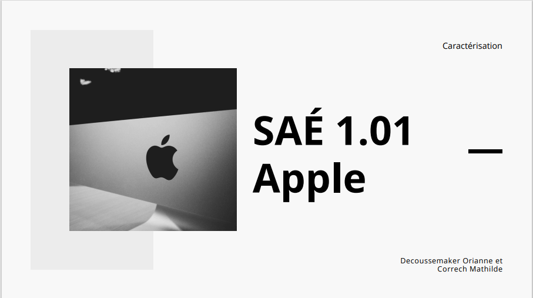
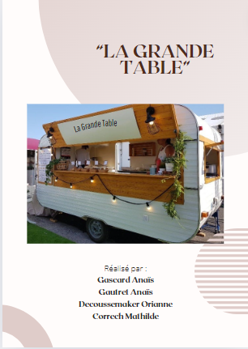
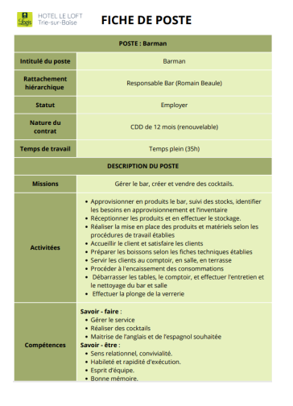
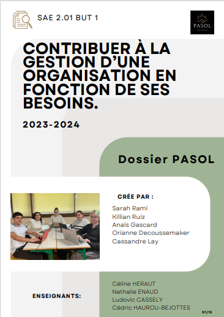
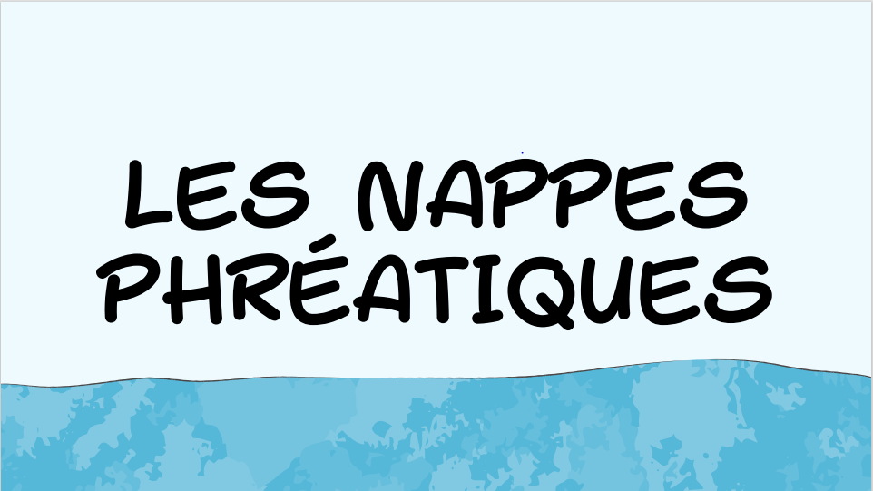
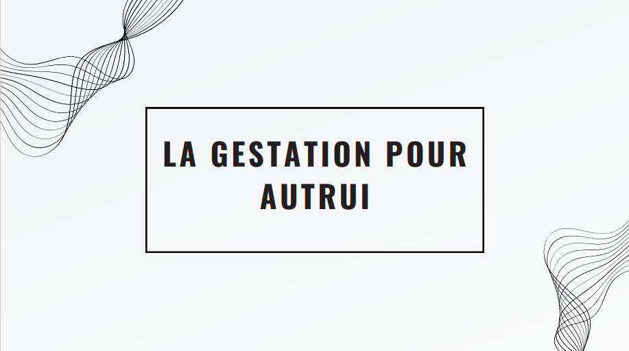
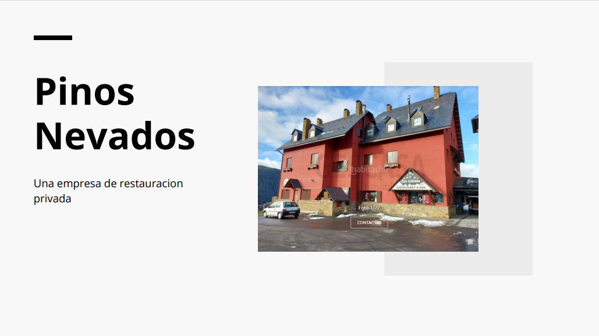
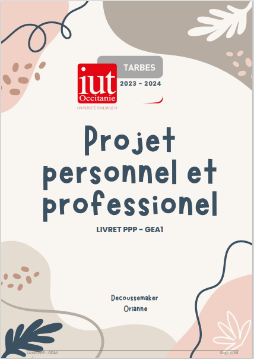
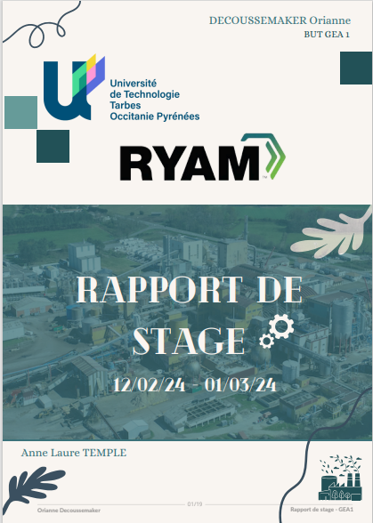

Mes Travaux
La SAE est une Situation d'Apprentissage et d'Évaluation, soit un projet constitué d'une ou plusieurs tâches à réaliser par un groupe d'étudiants en vue d'atteindre le but fixé. Elle permet aux étudiants de réunir leurs compétences dans plusieurs domaines et de les associer dans un cas concret.
SAE

SAE 1.01
Notre première SAE de l'année, basée exclusivement sur l'économie. Nous avons réalisé une caractérisation de l'entreprise Apple en duo, puis élaboré un PESTEL par groupe. Nous avons étudié l'environnement de l'entreprise « Sport Inc » au sein de 4 pays différents. Enfin individuellement, nous avons réalisé un processus de vente.
Voir le PDF
SAE 1.02
Lors de ce projet, nous avons travaillé sur plusieurs logiciels tels qu'Excel et Sage. Nous avons élaboré des documents comptables.
Voir le PDF
SAE 1.03
Dans le cadre de ce travail réunissant l'anglais, l'espagnol et la RH, nous avons élaboré une fiche de poste ainsi que plusieurs annonces en 3 langues. Puis, nous avons organisé une stratégie de communication et une procédure de recrutement avec des questions pour des entretiens.
Voir le PDF
SAE 2.01
Nous devions contribuer à la gestion de l'organisation « PASOL ». Nous avons réalisé différentes tâches au sein du pôle commercial, gestion puis communication. La particularité de ce travail réside dans son exécution sur seulement 2 jours, réunissant contrôle de gestion, marketing et outils numériques de gestion.
Voir le PDFTravaux collectifs — Économie

Ressources naturelles
Lors de cet exposé, nous avons travaillé sur un bien commun : les ressources naturelles.
Voir le PDF
L'économie collaborative
Nous avons traité de la plateforme Blablacar dans le cadre de l'économie collaborative.
Voir le PDFLes néokeynésiens
Nous avons réalisé une présentation d'un courant de la pensée économique.
Voir le PDFTravaux collectifs — Marketing
Le cas « La Grande Table »
Notre tâche finale en marketing : nous avons réalisé un diagnostic de l'entreprise ainsi qu'une stratégie marketing. Nous avons proposé un concept de Foodtruck avec la méthode des 4P (Produit, Prix, Distribution, Communication).
Voir le PDFTravaux collectifs — Espagnol
Boluz
Nous avons créé un concept dans le cadre d'un projet en espagnol. Pour cela, nous avons conçu et designé des boules de pétanque.
Voir le PDF
Piños Nevados
Nous avons créé une entreprise fictive : un restaurant dans les montagnes des Pyrénées, en utilisant des données réelles. Nous avons réalisé son plan de financement, sa carte, son équipe, etc. À l'issue de ce projet, nous avons imaginé une demande de financement auprès d'une banque.
Voir le PDFTravaux individuels
Tout au long de ma première année en BUT GEA, j'ai effectué plusieurs travaux personnels. Voici les deux grands projets de l'année.

Projet personnel et professionnel
J'ai réalisé un dossier sur mon projet personnel et professionnel, dans lequel j'ai exposé mes choix d'orientations et mes ambitions, ainsi que l'analyse de plusieurs métiers et de mes traits de personnalité à l'aide du site Parcouréo.
Voir le PDF
Rapport de stage
Stage effectué chez RYAM du 12/02/2024 au 01/03/2024, encadré par Anne Laure Temple — IUT de Tarbes, BUT GEA 1.
Voir le PDF